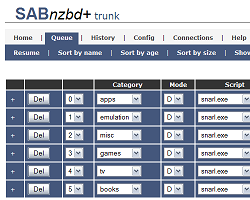
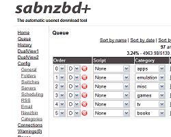

<!--#include $webdir + "/inc_top.tmpl"#-->

<form action="two" method="post">
<div class="bigger">
<h3>Skin</h3>
Which skin would you like to use for SABnzbd?<br /><br />
<table class="full-width align-center">
    <tr>
        <td class="align-center"><a href="static/images/default.png" target="_blank"></a></td>
        <td class="align-center"><a href="static/images/plush.png" target="_blank"></a></td>
        <td class="align-center"><a href="static/images/smpl.png" target="_blank"></a></td>
    </tr>
    <tr>
        <td class="align-center"><br/><input type="radio" name="skin" id="radio_default" value="Default" <!--#if $skin == 'default' then 'checked="checked"' else ''#-->><br /><label for="radio_default">Default</label></td>
        <td class="align-center"><br/><input type="radio" name="skin" id="radio_plush" value="Plush" <!--#if $skin == 'plush' then 'checked="checked"' else ''#-->><br /><label for="radio_plush">Plush</label></td>
        <td class="align-center"><br/><input type="radio" name="skin" id="radio_smpl" value="smpl" <!--#if $skin == 'smpl' then 'checked="checked"' else ''#-->><br /><label for="radio_smpl">SMPL</label></td>
    </tr>
</table>
</div>
</div>
<hr /><br/>

<table class="full-width">
    <tr>
        <td><input class="bigbutton" type="button" onclick="document.location ='./'" value="&lsaquo; Previous" disabled/></td>
        <td>
            <div class="align-center">
                <!--#for $step in xrange($steps)#-->
                   <!--#set $step = $step + 1#-->
                    <span class="<!--#if $step == $number then 'selected' else 'unselected'#-->">$step</span> 
                <!--#end for#-->
            </div>
        </td>
        <td class="align-right"><input class="bigbutton" type="submit" value="Next &raquo;" /></td>
    </tr>
</table>
</form>
			
<!--#include $webdir + "/inc_bottom.tmpl"#-->